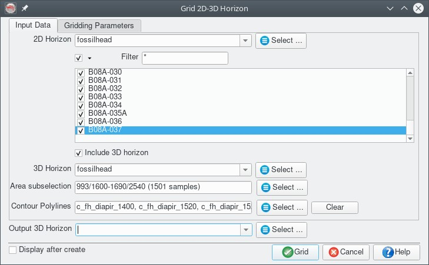
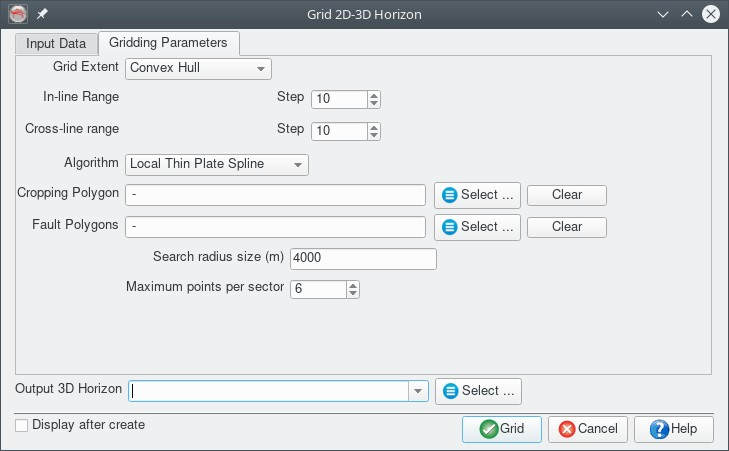
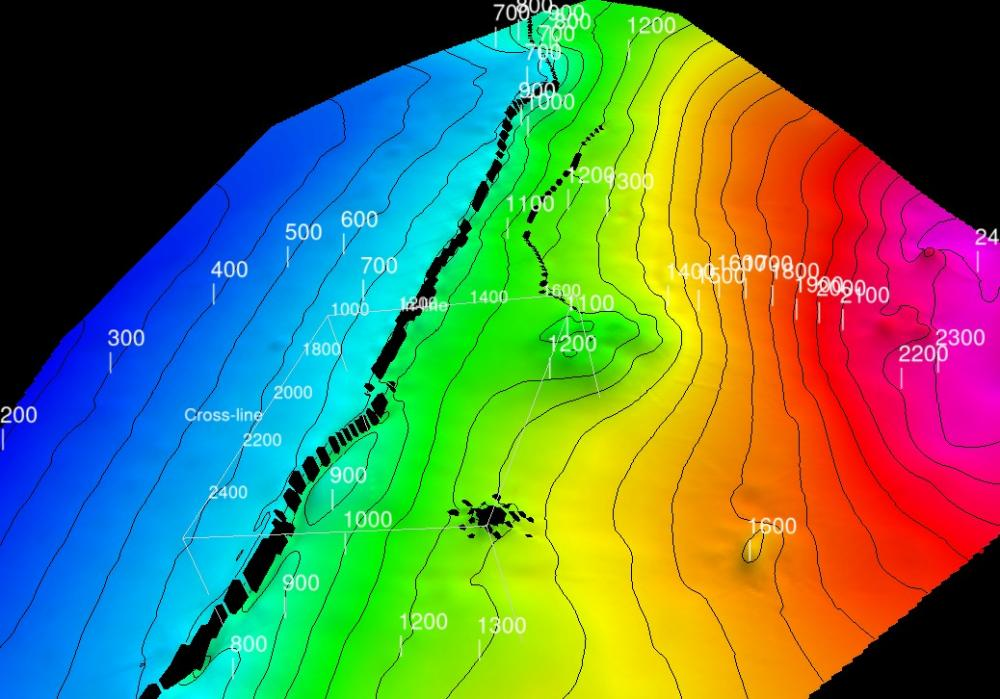
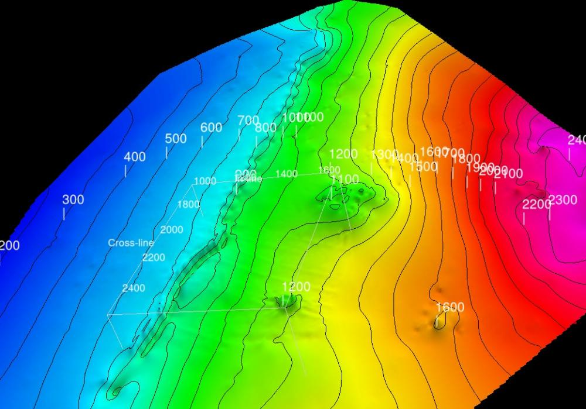
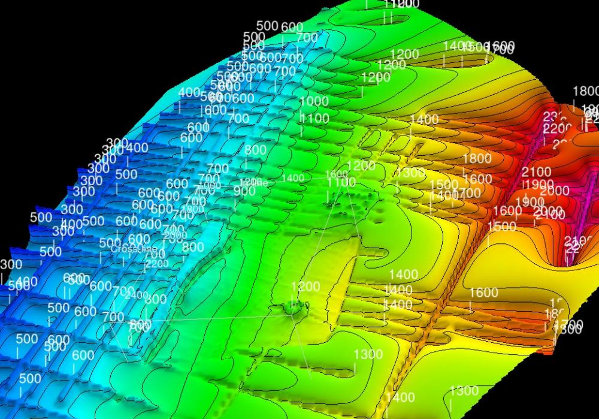
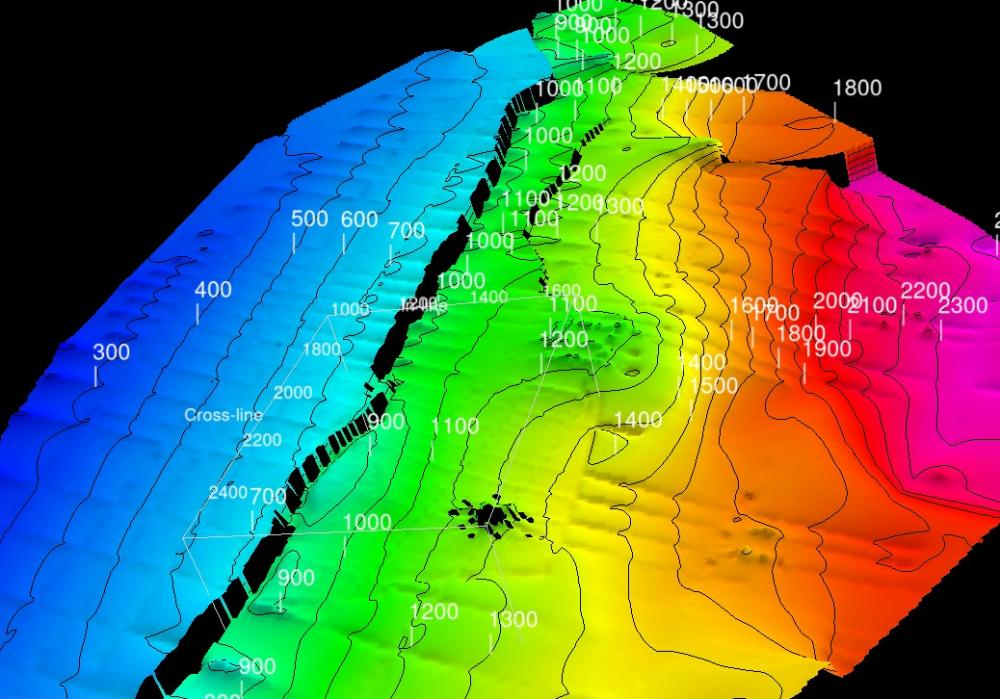
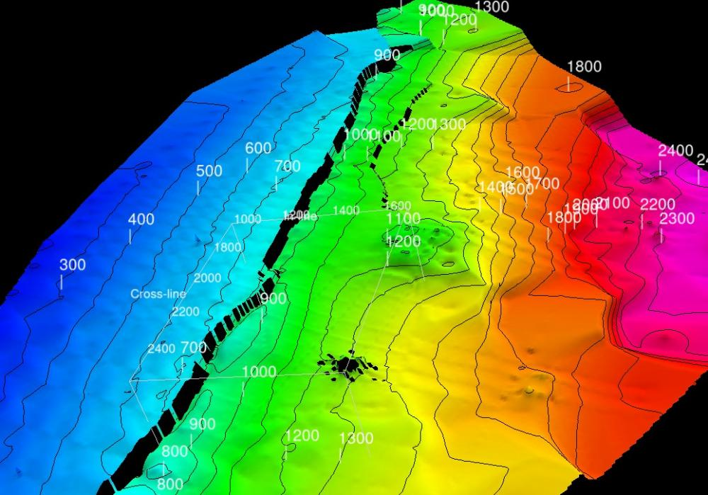
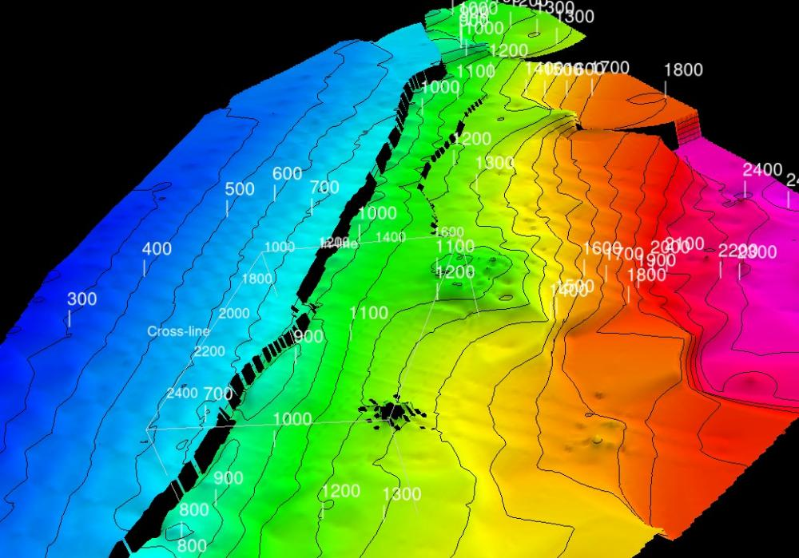
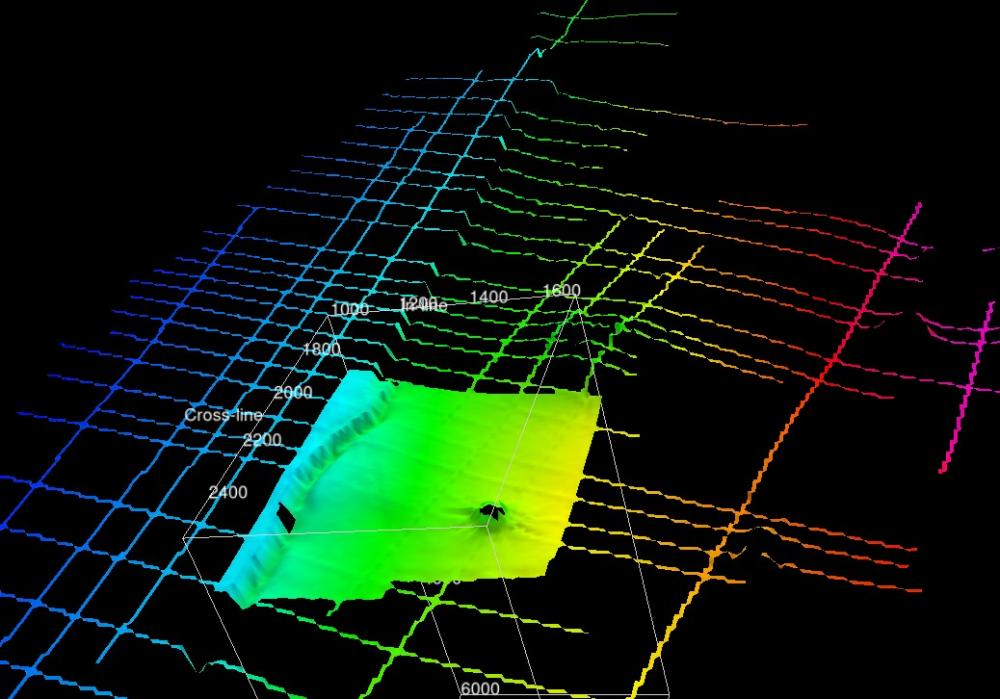

This plugin, for the open source seismic interpretation platform OpendTect Version 6.4.0 or later, creates a 3D horizon/grid from the 2D and 3D horizon interpretation in an OpendTect survey/project.
Description
The plugin adds a "Grid 2D-3D Horizon..." item to the "Processing|Create Horizon Output" menu which opens a dialog box for:
- Selecting 2D and 3D seismic interpretation and contour poly-lines to grid
- Specifying the output horizon name, extent and inline /crossline interval
- Specifying a cropping polygon
- Specifying a set of fault polygon constraints
- Selecting the interpolation algorithm to use
In the current release the plugin includes 4 gridding/interolation algorithms:
- Local Thin Plate Splines (LTPS)
- Multilevel B-Splines (MBA)
- Inverse distance squared weighted averages (IDW)
- Nearest neighbour (NRN)
The LTPS and IDW methods can apply fault constraints (heave polygons) to ensure the input data used to interpolate a grid node is from the same side of any faults.
Input Parameters


- Grid Extent: Four options available:
- Range - explicitly set the Inl/Crl range and steps for the output surface
- Bounding Box - set the output horizon extent from the extent of the input data, adjusted to snap to the specified Inl/Crl steps
- Convex Hull - sets the gridding scope to the convex hull of the input data, adjusted to snap to the specified Inl/Crl steps
- Horizon - set the output horizon extent to match an existing horizon in the survey/project
- Cropping Polygon - select a polygon to crop the grid output
- Fault Polygons - select polygons to use as fault constraints during gridding. Suggest fault naming scheme that prefixes the polygons with "f_horizon name" to make them easy to select
Algorithms
Local Thin Plate Spline
This is a multi-stage algorithm with the following steps:
- Interpolate the data to the corners of the surrounding grid nodes (ie nearest neighbour)
- Fit a Multilevel B-Spline (MBA) surface (no fault constraints applied) and compute residuals from the input
- Grid the MBA residuals using a radial basis function algorithm using a thin plate spline basis. The points used in the basis fit are determined using distance and azimuth from the grid point. The data around each grid point is sorted based on distance and binned into one of eight azimuth sectors. Only the nearest points in each sector are used in the interpolation. No interpolation is done if there are less than 5 sectors with data. Fault constraints are used in this stage. The residuals are added to the MBA stage output to produce the final surface.
Controls are the maximum search radius and the maximum points used from each sector. This algorithm can use fault constraints.

Multilevel B-Spline
This is the adaptive Multi-level B-Spline algorithm published by Lee, Wolberg and Shin (1997) as implemented by Denis Demidov.
This method does not use fault contraints.

Inverse Distance Weighted
This is basic Inverse Distance Squared Weighted gridding. By tweaking the parameters it is possible to control the input data used for each grid point. Options are:
- No distance or point count limit (global)
- Use all points within a specified distance
- Use nearest number of points
- Limit by both the distance and the nearest number of points
The method can use fault constraints but will be very slow unless appropriate distance and point count limits are set.




Nearest Neighbour
This uses a simple weighted average method to assign grid values to the 4 nodes around each input data point.
